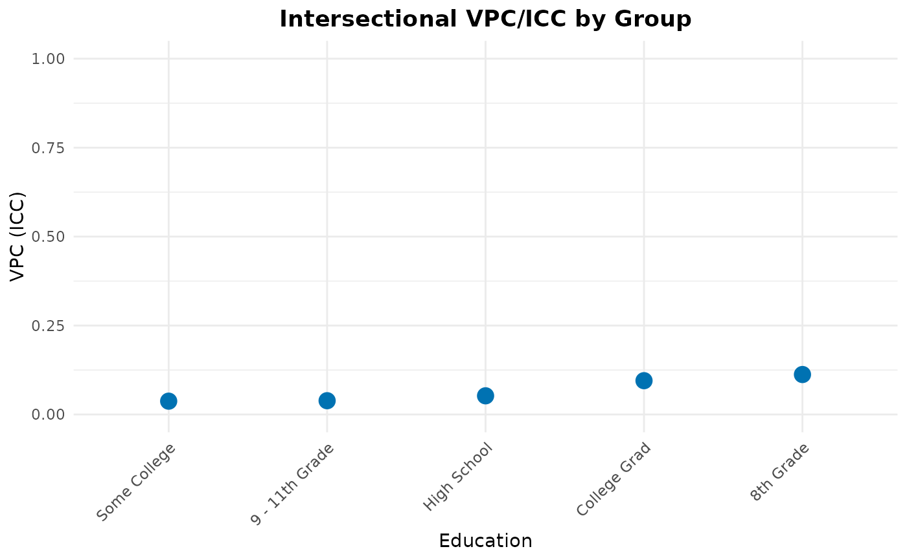
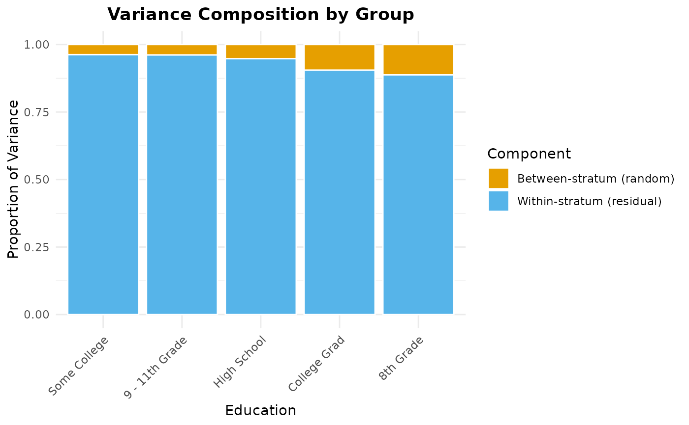
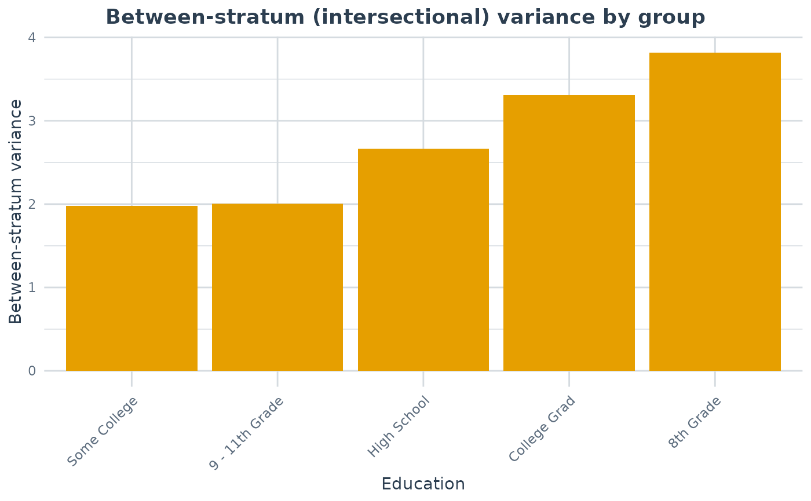

Visualises the output of compare_maihda_groups as a point/forest
plot of the VPC/ICC by group, as stacked variance-composition bars (between- vs
within-stratum share) by group, as bars of the absolute between-stratum
(intersectional) variance by group, or as bars of the additive share (PCV) by
group. Dispatched via plot() on the classed result.
Arguments
- x
A
maihda_group_comparisonobject fromcompare_maihda_groups.- type
One of "vpc" (default) for VPC by group with optional bootstrap confidence intervals, "components" for stacked variance proportions (additive / interaction / residual for a crossed-dimensions comparison, between / other / residual otherwise), "between_variance" for the absolute between-stratum variance by group, "pcv" for the two-model additive share (null -> adjusted proportional change in between-stratum variance) by group, or "additive_share" for the crossed-dimensions additive share by group. The VPC is a share of the unexplained variance; "between_variance" shows the magnitude the ratio cannot convey (two groups with very different VPCs can share a between-stratum variance, and vice versa); "pcv" requires strata defined by at least two dimensions.
- ...
Additional arguments (not used).
Examples
# \donttest{
data(maihda_health_data)
cmp <- compare_maihda_groups(BMI ~ Age + (1 | Gender:Race),
data = maihda_health_data, group = "Education")
#> boundary (singular) fit: see help('isSingular')
#> boundary (singular) fit: see help('isSingular')
plot(cmp, type = "vpc")

plot(cmp, type = "components")

plot(cmp, type = "between_variance")

# }